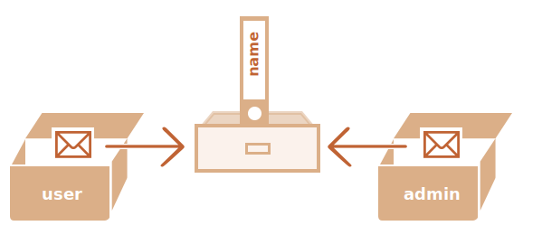

Копирование объектов и ссылки
Одним из фундаментальных отличий объектов от примитивных типов данных является то, что они хранятся и копируются «по ссылке».
Примитивные типы: строки, числа, логические значения – присваиваются и копируются «по значению».
Например:
let message = "Привет!";
let phrase = message;В результате мы имеем две независимые переменные, каждая из которых хранит строку
"Привет!".
Объекты ведут себя иначе.
Переменная хранит не сам объект, а его «адрес в памяти», другими словами «ссылку» на него.
Проиллюстрируем это:
let user = {
name: "Иван"
};Сам объект хранится где-то в памяти. А в переменной user лежит «ссылка» на эту область
памяти.
Когда переменная объекта копируется – копируется ссылка, сам же объект не дублируется.
Если мы представляем объект как ящик, то переменная – это ключ к нему. Копирование переменной дублирует ключ, но не сам ящик.
Например:
let user = { name: "Иван" };
let admin = user; // копируется ссылкаТеперь у нас есть две переменные, каждая из которых содержит ссылку на один и тот же объект:
Мы можем использовать любую из переменных для доступа к ящику и изменения его содержимого:
let user = { name: 'Иван' };
let admin = user;
admin.name = 'Петя'; // изменено по ссылке из переменной "admin"
alert(user.name); // 'Петя', изменения видны по ссылке из переменной "user"Приведённый выше пример демонстрирует, что объект только один. Как если бы у нас был один ящик с
двумя
ключами и мы использовали один из них (admin), чтобы войти в него и что-то изменить, а
затем, открыв ящик другим ключом (user), мы бы увидели эти изменения.